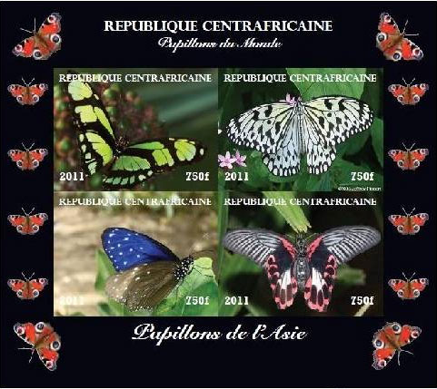
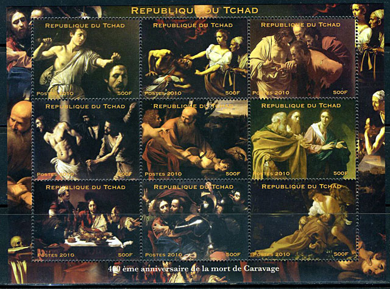

THE "EXPERTIZE" OF THE UPU EXPERTS IN ILLEGAL STAMPS
THE "EXPERTIZE" OF THE UPU EXPERTS IN ILLEGAL STAMPS
AND THEIR USELESS POLICY
From our practical experience: What to expect from the UPU experts in illegal stamps?
The short answer is: nothing.
The long answer can be inferred from the exchange of e-mail between the UPU's experts (as they call themselves) in illegal stamps and the PWO. We present below a summary of the exchange of views:
- Because the domain of illegals is not researched anymore by the UPU, its "experts" are not able to answer simple questions about the legitimacy of newer illegal issues. Answers like "It [Chad PA - VM] never replied to our demand and therefore we can consider that it is not an illegal issue because never denounced by this country" are obviously ridiculous.
- For the same reason the UPU stopped in 2011 the publication of its Circulars referring to illegal stamps. Please note that in the past the denunciations of illegals by the affected postal administrations (PA) were mostly based of the researches made by the UPU, for the reason that those rather disadvantaged PA were unable to make such researches by themselves.
We have good reasons to think that because the very expensive WNS database does not solve the problems related to illegal stamps, even if it was thought for this, and because the UPU isn't active anymore in the realm of illegal stamps, its experts haven't answered our last e-mail.
Our further actions in the fight against illegal issues:
- Collaboration with big Internet sites (for instance Delcampe.com) that facilitate the stamp commerce
- Collaboration with our partner AIJP
- Denouncement of illegal issues and of bad policies related to them on this site
Victor Manta, PWO President and Founder
29 November 2011
PS. Because no UPU Circulars were issued in 2011 and there are no matches on the WNS site for Central African Rep., even if the country is listed, how to find out the status of the sheetlet shown below, and of other 3 closely related ones (not shown), issued in AD 2011? Should we ask again the UPU experts and then wait for 8 months for an answer, for finally get one that is similar to what we cited above? Meanwhile these sheetlets are offered worldwide on the Web, quite high prices being asked for them (about Euro 35 + S/H by Euro 9). How many unsuspecting collectors will buy them and, after having one day learned the bitter truth, will disgusted quit forever the stamp collecting?

From: PWO President
To: Jean-francois LOGETTE ; philately@upu.int ; wns@upu.int
Sent: Wednesday, November 03, 2010 11:04 AM
Subject: Q: Chad 2010 Caravaggio Sheet - illegal or not?Dear WNS and All,
I received recently from a German stamp collector the following e-mail:
"As amatter of fact I bought a set of stamps at Delcampe.net (do you know ?) "TCHAD - 400th anniversary of the death of Caravaggio - 2010" and afterwards had to find out that the seller in the U.K. was a Mr. Juan Marino-Montero ! The name triggered every alarm bell in me because he was more than once described as on of the major sellers of illegals.
Do you have any information about that set of stamps, I include a picture for your information."
Because the only information I could find on wnsstamps.ch about the 2010 Chad issues was: "The 2010 issuing programme is not available." please let me know if this issue is legitimate. More generally, I would like to know how to find out for the many issues that aren't listed by the WNS if they are legit or not.
Please find attached the image of the sheet mentioned above.
Many thanks in advance for your kind collaboration.
Best regards,
Victor Manta, PWO, AIJP

From: LOGETTE, jean-francois
To: PWO President
Cc: THIVET, jean-francois ; CUENNET, stephane ; MCKEOWN, ken
Sent: Wednesday, July 20, 2011 3:10 PM
Subject: RE: Chad 2010 Caravaggio Sheet - illegal or not?Dear Mr. Manta,
Thank you for your e-mail.
No circular concerning the illegal issues was published by the UPU since 1st January 2011. It means that no designated operator of UPU member countries have mentioned to the UPU such a problem in 2011.
As you know the new UPU website does not publish any more the UPU circulars but you can find them on the WNS website www.wnsstamps.ch because we have decided to continue to inform the collectors and the philatelic community as well.
We would wish to say that the volume of illegal issue has considerably decreased and from 500 millions US$ (a number extracted from nowhere) in 2002 we have passed to 200 000 US$ in 2008 (a number extracted from a survey given out to the stamp issuing authorities of the UPU member countries). Some tools for combating the illegal issues were given to the designated operators during the philately workshops organized by the UPU/WADP worldwide since 2006. We could thus consider that the above mentioned number is very small in comparison to the annual stamps market (17,4 billions US$). But we continue to help the designated operators but with some adapted modern means for combating this issue.
Do you continue to think that the UPU illegal issues circulars are very helpful for the community philately?
Concerning the mentioned case of Chad, we have of course asked to this UPU member country if the Caravaggio sheet was an illegal issue. It never replied to our demand and therefore we can consider that it is not an illegal issue because never denounced by this country.
We hope that this reply would be very helpful for your information.
Best regards
Jean-François Logette
UPU Philately Expert
Philately and IRC's Programme Manager
WADP Secretariat
From: PWO President
To: LOGETTE, jean-francois
Cc: THIVET, jean-francois ; CUENNET, stephane ; MCKEOWN, ken
Sent: Friday, July 22, 2011 11:12 PM
Subject: Re: Chad 2010 Caravaggio Sheet - illegal or not?Dear Mr. Logette,
Thank you for your answer. I have a few thoughts that I would like to share with you (my questions, which I would ask you to please answer, are in bold).
First, it seems strange that the fact that the PA of Chad has not answered your inquiry is proof of the legitimacy of the Caravaggio sheet. It looks like this PA has failed to communicate with you and the WNS on the subject of legitimate stamps since 2006 already, which we inferred from Chad's "Awaiting Stamps for Registration" entry on the WNS page:
http://wnsstamps.ch/en/participating
As long as the WNS does not know what are the legitimate stamps of Chad (like of many other countries), why do you consider that the mentioned Caravaggio sheet is legitimate? Does it truly suffice for you to know that you did not hear back after your direct inquiry?In what concerns the minor question of where the UPU Circulars were published, I am confused by your answer. If one visits the WNS site and clicks on the only "UPU Circulars" link visible on the home page, it sends one directly to: http://www.upu.int/en/activities/philately/circulars.html
Hence, it appears that the circulars are not published on the WNS site itself, but that there is only a link to the same UPU website where they always were, at the same link that I mentioned to you in my initial email.
You confirm in your message what we have noticed, i.e., that in 2011, no IB Circulars were published on the UPU site. You justify it by the supposed decline of the volume of illegal issues, from US$ 500 million in 2002 (to quote you, "a number extracted from nowhere") to US$ 200 thousand in 2008 ("a number extracted from a survey"). Both of these quoted passages are quite puzzling, and for this reason, they deserve special attention.
You give a comparison between two figures that suggests an unimaginably fast decline in the total yearly value of illegal issues - a decline of over US$ 80 million each year between 2002 and 2008. Perhaps because you are aware that such a decrease is not credible, you yourself question your first reference. If there is no basis for the first figure, any conclusions based on it are of no relevance. Further, that figure originated from the UPU itself, as mentioned in http://en.wikipedia.org/wiki/Illegal_stamps and as you can look up in the UPU archives. It is disconcerting that you do not believe there to be a basis for this figure - because it makes us question where the UPU gets the figures that it publicizes - and yet you use it to show a supposed massive decrease in the value of illegal issues.As we remember well, this figure was used by the IB of the UPU to justify the creation of the (quite expensive) WNS database of legitimate stamps. It appears that US$ 500 million is not a figure that we can trust because, according to you, it comes out of nowhere - in that case, what is the correct figure? If the creation of the WNS database was based on a wrong figure, doesn't that make its entire creation questionable?
Given the doubts that have arisen on our part based on your answers and comments, this also made us wonder about the survey that you mentioned and how the US$ 200 thousand figure arose. What were the questions of the survey? To how many countries were they sent? How many countries answered? Which of the countries that answered were among those significantly affected by illegal issues? How did they calculate the volume of illegal trade in their particular countries? How or where can we obtain from you (we are ready to pay for it) all the survey answers?
Having explained the problems we noticed with your explanation, we would now like to turn to your question: "Do you continue to think that the UPU illegal issues circulars are very helpful for the community philately?"
We at the PWO have a long experience in fighting illegal issues and in assisting stamp collectors and dealers to identify them. For one, we ourselves have not noticed a clear decline in the issuance of new suspicious stamps. In the past, we were able to rely on the Circulars published by the IB of the UPU, an organization that actively identified illegal stamps and thus helped member countries to denounce them. Since the IB apparently does not internally perform much of this type of research anymore and expects countries to do it on their own (which most of the affected countries are not able to do), the number of Circulars about illegal stamps has exponentially decreased, and it has become more difficult for us to answer inquiries related to actual stamps that are thought illegal by people who ask us about them.
Worse, even direct questions to your office do not result in helpful responses. The answer that we received from you, after 9 months of waiting, in what concerns the Chad stamps does not encourage us to contact you again for future such matters. Due to these circumstances and because the WNS database does not address the problems related to illegal stamps, we strongly believe that IB Circulars - produced, as in the past, based on real, UPU-based research as opposed to the current state of affairs - could help the philatelic community a lot.
Many thanks for your collaboration.
Best regards,
Victor Manta, PWO, AIJPNote: Because this e-mail wasn't answered by the UPU after 4 months of wait, we can be quite sure that it won't be addressed in the future either by the addressees
.
|